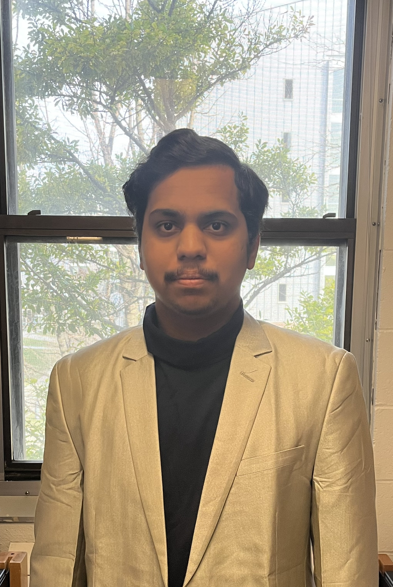

Hi, My name is Oankar Santosh Ghorpade
and I am a passionate

About Me
Hey there! I'm Oankar Santosh Ghorpade, a passionate computer science student and am aspiring Software Developer. Currently pursuing my Undergraduate Bachelors Degree in Computer Science at the University Of Cincinnati in United States Of America.My journey in the field of computer science started when I first disassembled and assembled my pc when I was of 11 years of age and since then I have dedicated my life in expanding my knowledge in this rapidly evolving field. My portfolio shows testament to my journey until now.
What I have Done
Work Experience
Full Stack Development Intern |TCR Innovation (Jan2023-Apr2023):
• Collaborated in front-end development during duration of internship
• Created user interfaces using CSS, JavaScript
• Got to work on 2 project using JavaScript, HTML, CSS
Full-Stack Development Intern | Msys Technologies LLC (Sept 2023-Nov 2023):
• Collaborated in front-end development during duration of internship
• Analyzed application requirements and developed technical specifications
• Constructed user interfaces using HTML,CSS, JavaScript and React JS
• Updated existing websites with new features or content using JavaScript and React JS